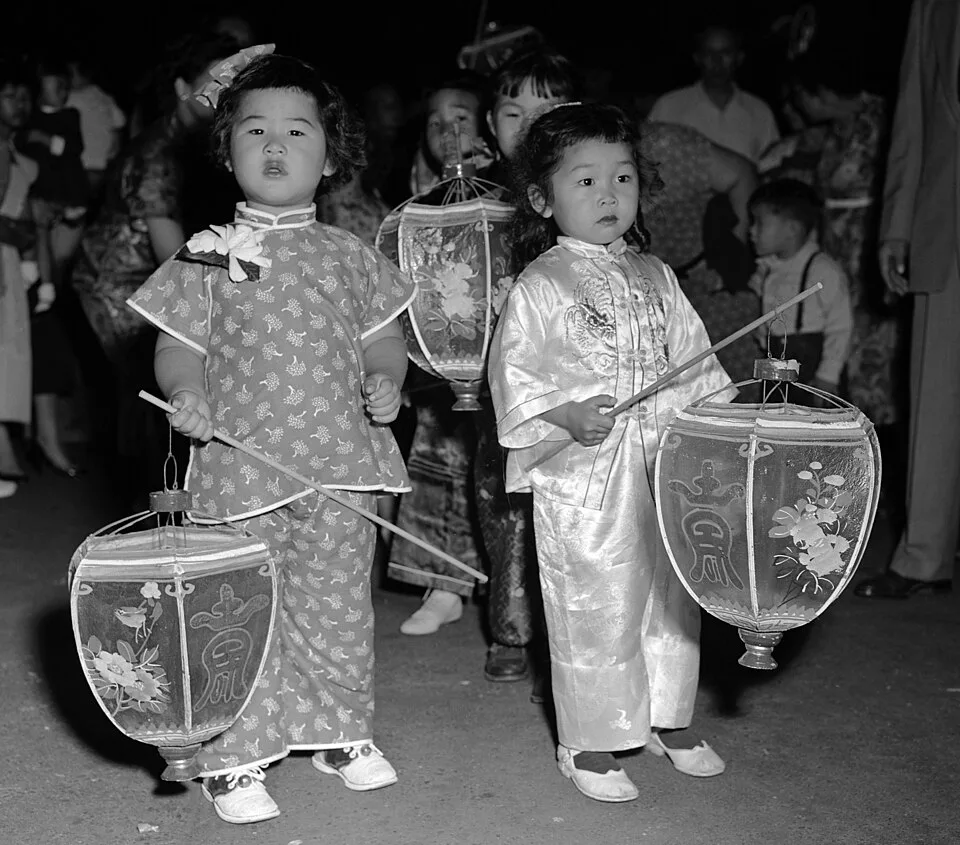

Lantern Carry Parade
A made lantern with a safe light inside, carried with two hands on a slow walk around the room, the Lantern Festival, sized for three.
Before you begin
- Ages
- 3–5
- Group
- 4–18 kids
- Time
- 10–20 min
- Where
- Indoors
- Prep
- Some prep needed

Setup
Assemble every lantern yourself before the group arrives: LED tealight inside, top handle taped or tied so it holds a gentle swing, and carry each one across the room yourself. A lantern that tips its light out in your hands gets fixed now, not in a three-year-old's. Set the rug at the far end as the place the parade is walking to.
Materials
- paper or fabric lanterns with an LED tealight inside (one per kid, adult-assembled)
- a rug or blanket (the parade's end)
Steps
- Name the real custom in one sentence, plainly: 'At the Lantern Festival, at the end of the Lunar New Year celebrations, people carry lanterns outside together. We are doing our small indoor one.' Then state the one rule: 'Two hands on the handle, walking feet. The lantern stays up.'
- Hand out lanterns one at a time, lit, and let each kid practise the carry standing still: two hands, lantern held in front, a small sway is fine and a swing is not. Practising still is what makes the walk slow.
- The parade walks: one slow line around the room, you at the front setting a pace a lantern can keep up with, the group naming what the lights look like as they go. That naming is the looking this festival is for.
- Halfway stop: everyone raises their lantern slowly to shoulder height and holds it while the group counts to five out loud, then lowers it just as slowly. Lifting and lowering a light without swinging it is harder than it looks, and the counting gives it time.
- Arrive at the rug: lanterns are set down in a row on the rug, still lit, and the group sits behind them and just looks for a moment. A row of lights you carried yourself is the ending. Lights off one by one as each lantern is collected.
Variations
Easier: A shorter route, across the room and back, and the adult carries a lantern in the line too, so the pace is set from inside the parade.
Harder: A second lap where each carrier chooses one thing in the room to stop and hold their lantern up to, and names it to the group.
Safety
LED tealights only, no real flames, no sparklers, nothing that burns. Carrying is walking, always: a lantern that gets run with comes back to the line's end for one lap carried by the adult, kindly and without a speech. Handles are checked before the walk; a torn handle retires that lantern.
Source: Wikipedia: Lantern Festival
Inclusion notes
A lantern carried on a lap tray, or set on the front of a wheelchair and pushed along the same route, is in the parade in full. The parade is the line, the lights and the slow pace, and every carrier in it is carrying. A kid who would rather be the rug-keeper, holding the row straight as lanterns arrive, has the job the whole parade is walking toward.
Tried this? Rate it
Your ratings live in this browser only. Nobody else can see them. There are no community ratings here; every star on this card is yours.
Rate this activity, add a note, or write a reflection
Quick reflection
Optional, saved with your rating, and exported with "Copy my week".
Full activity card,